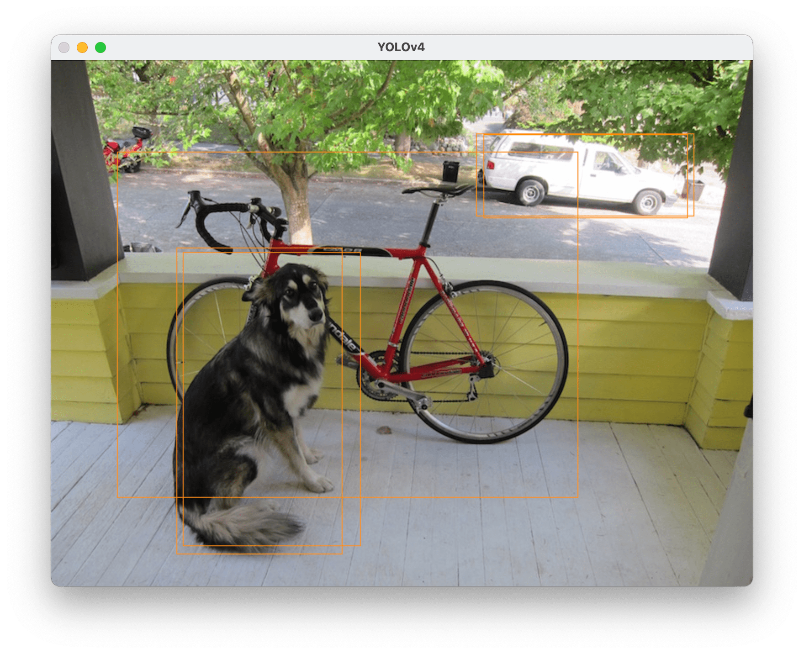

YOLOv4 in Rust using OpenCV's Deep Neural Networks
Published at Mar 30, 2024
Recently I got into CNN based object detectors in computer vision for my master’s thesis and I was wondering whenever I could work on this project in Rust. Here are my findings on how to load YOLOv4 object detector into a Rust program using OpenCV library.
YOLO as Object Detector
For object detection model I went for the popular YOLO detectors. Choosing a particular version might not be as easy as just choosing the one with highest version number. After version v3, the project was abandoned by the original author and since the name name wasn’t trademarked, different interested parties have appropriated the title. This is topic however, is worthy of a separate article.
I have gone for the YOLOv4 since it was the last one created on the darknet framework. The original darknet repository has been abandoned but a forked and currently maintained version can be found here.
To perform detection with YOLO model you need a configuration file which describes the architecture of the model. You also need a .weights file which are crucial for the network to performs predictions based on input images.
You can find there great tutorials on how to train your own YOLO model. For purpose of this tutorial, I will use pre-trained MS-COCO weights and the default yolov4-tiny.cfg (both can be found in darknet repository).
Load YOLO
To load the model I will use the OpenCV library and it’s deep neural networks (dnn) module. Since it’s written in C++, Rust library with bindings is needed. Fortunely for us, there is actively maintained project called opencv-rust. I recommend going through the repository readme on installation and common trouble shooting in case of errors.
With that out of the way, we can jump straight to code. Do a quick cargo init and put both cfg yolov4-tiny.cfg and yolov4-tiny.weights
inside your project’s directory. Open src/main.rs in your favourite editor and let’s go.
First we need to import our OpenCV library. From CLI you can do cargo add opencv. Also worth adding cargo add anyhow to handle results easier and
cargo add itertools.
The authors have broken up the lib into modules so we need to point at the ones
we need. Mainly dnn but also core for some OpenCV specific types etc. Then in main we can load up
the YOLO using dnn’s read_net function i.e:
use anyhow::Result;
use itertools::izip
use opencv::{core, dnn, highgui, imgcodecs, imgproc, prelude::*};
fn main() -> Result<()> {
// Setup model based on YOLOv4 config and weights
let config = "yolov4-tiny.cfg";
let weights = "yolov4-tiny.weights";
let net = dnn::read_net(weights, config, "Darknet")?;
let mut model = dnn::DetectionModel::new_1(&net)?;Now the model has been marked as mutable because we will need to specify some parameters that are required for prediction.
let scale: f64 = 1.0 / 255.0;
let size = core::Size {
width: 416,
height: 416,
};
let mean = core::Scalar {
0: [0.0, 0.0, 0.0, 0.0], // Generally for YOLO
};
let swap_rb: bool = true;
let crop: bool = false;
model.set_input_params(scale, size, mean, swap_rb, crop)?;The model is now ready to perform prediction. Quick note: by default, the model will do inference(prediction) using CPU. To use GPU you would need to set the backend and target parameter in model similarly to those above.
To store detections we need OpenCV specific types.
// Vecs to store detections
let mut class_ids = core::Vector::<i32>::new();
let mut confidences = core::Vector::<f32>::new();
let mut boxes = core::Vector::<core::Rect>::new(); Now we are ready to perform detections! Let’s load an image as the input to YOLO the object detector and perform detections. I’ll take this standard picture of dog as an example.

// Open img
let img_file = "img.jpg";
let mut img = imgcodecs::imread_def(img_file)?;
// Perform detections
model.detect_def(&img, &mut class_ids, &mut confidences, &mut boxes)?;
// Put bounding boxes on the img
let color = core::Scalar {
0: [0.0, 140.0, 255.0, 0.0], // Orange
};
for (_cid, _cf, b) in izip!(&class_ids, &confidences, &boxes) {
imgproc::rectangle_def(&mut img, b, color)?;
}
// Display in a GUI window
highgui::named_window("YOLOv4", highgui::WINDOW_FULLSCREEN)?;
highgui::imshow("YOLOv4", &img)?;
highgui::wait_key_def()?;
Ok(())
}This should create a GUI window with the input image and bounding boxes acquired from running the model, drawn on it. 
The weights and configuration that we have used here i.e yolov4-tiny.cfg and it’s default weights, have been trained on MS-COCO and the 80 classes (object names). As you might have noticed, I have omitted displaying class id to make this easier and quicker. For further implementation, if you would like to continue with MS-COCO, you would need to load the names of classess and match the class id with it’s respective counterpard in the file. From that you would get matching id to dog, car etc. Additionally, you could also display the confidence in detection scoure, i.e how sure the network is in 0-100% that the object detected is indeed the one it predicts.
Now that model is loaded, true fun can begin and you can build on top of that.
Full Code
https://github.com/bortyr/yolo-rust-tutorial
use anyhow::Result;
use itertools::izip;
use opencv::{core, dnn, highgui, imgcodecs, imgproc, prelude::*};
fn main() -> Result<()> {
// Setup model based on YOLOv4 config and weights
let config = "yolov4-tiny.cfg";
let weights = "yolov4-tiny.weights";
let net = dnn::read_net(weights, config, "Darknet")?;
let mut model = dnn::DetectionModel::new_1(&net)?;
let scale: f64 = 1.0 / 255.0;
let size = core::Size {
width: 416,
height: 416,
};
let mean = core::Scalar {
0: [0.0, 0.0, 0.0, 0.0], // Generally for YOLO
};
let swap_rb: bool = true;
let crop: bool = false;
model.set_input_params(scale, size, mean, swap_rb, crop)?;
// Vecs to store detections
let mut class_ids = core::Vector::<i32>::new();
let mut confidences = core::Vector::<f32>::new();
let mut boxes = core::Vector::<core::Rect>::new();
// Open img
let img_file = "img.jpg";
let mut img = imgcodecs::imread_def(img_file)?;
// Perform detections
model.detect_def(&img, &mut class_ids, &mut confidences, &mut boxes)?;
// Put bounding boxes on the img
let color = core::Scalar {
0: [0.0, 140.0, 255.0, 0.0], // Orange
};
for (_cid, _cf, b) in izip!(&class_ids, &confidences, &boxes) {
imgproc::rectangle_def(&mut img, b, color)?;
}
// Display in a GUI window
highgui::named_window("YOLOv4", highgui::WINDOW_FULLSCREEN)?;
highgui::imshow("YOLOv4", &img)?;
highgui::wait_key_def()?;
Ok(())
}